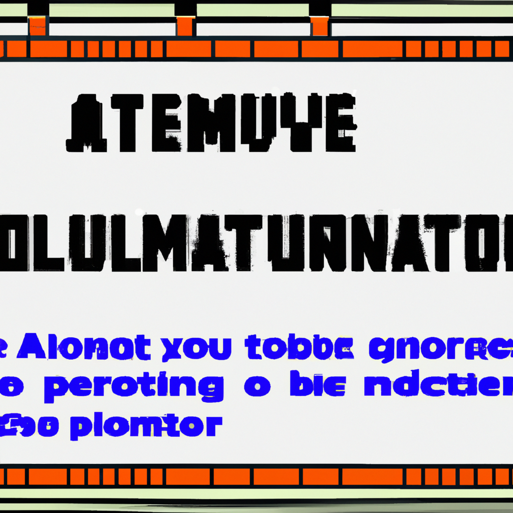

How to make an Automatic Blog Post generator
Creating a blog post generator can be a great way to free up your time and give your blog a personal touch. With the help of artificial intelligence and python coding, you can develop an automated system that can create high-quality content for your blog. In this post, I'll explain how to build an AI-powered blog post generator.
To get started, you'll need to create a text file for the content that you want your blog post generator to include. This text document should include key words, phrases, and or sentences that you want your blog post generator to be able to use. This content can be as general or as specific as you want it to be.
Next, you'll need to set up the code to create your blog post generator. This requires writing a script that cleanses, organizes, and randomizes the content in the text file you created. The script should involve basic artificial intelligence techniques, such as natural language processing, part-of-speech tagging, meaning extraction, and sentiment analysis. In addition, the script should also incorporate features of machine learning, such as text classification. After implementing the code, you should have a blog post generator that is ready to use.
Finally, it’s time to test it out. To do this, you’ll need to supply the blog post generator with a few pieces of content and then see what type of content it produces. For example, if you provide the blog post generator with a few words, it should be able to generate an entire blog post using those words as a starting point. You can also provide it with specific topics, such as sports, or general topics, such as travel.
Now that you have created a blog post generator, you should find that your blog is getting more visitors and subscribers. Additionally, your blog should have a more personal touch that will help readers feel more connected. Furthermore, your blog post generator should free up your time so that you can focus on other aspects of your blog.